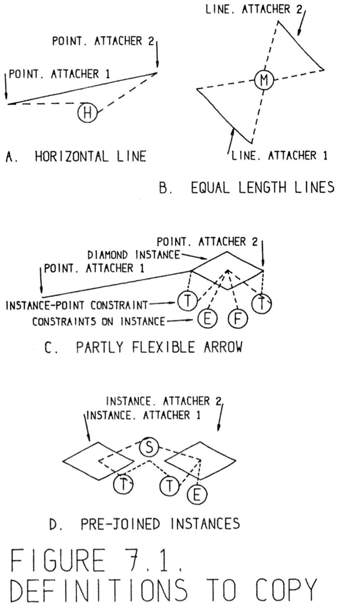

As experimentation with drawing systems for the computer progressed, the
basic drawing operations evolved into their present form. At the outset, the
very general picture and relationship defining capability of the copy and recursive merging functions were unknown and so considerable power had to
be built directly into the system. Now, of course, it would be possible to use
much simpler atomic operations to draw simple pictures embodying many of
the notions now treated as atomic.
コンピュータ用描画システムの試行錯誤が進むにつれ、基本的な描画操作は現在の形へと進化していきました。当初は、「コピー」や「再帰的マージ」といった機能が持つ、図形やその関係性を定義する極めて汎用的な能力が認識されていなかったため、システム自体にかなりの機能を直接組み込む必要がありました。もちろん現在では、かつては「基本（アトミック）」なものとして扱われていた概念の多くを具現化する単純な図形であっても、より単純な基本操作を組み合わせて描画することが可能です。
An idea that was difficult for the author to grasp was that there is no state of
the system that can be called “drawing.” Conventionally, of course, drawing is
an active process which leaves a trail of carbon on the paper. With a computer
sketch, however, any line segment is straight and can be relocated by moving
one or both of its end points. In particular, when the button “draw” is pressed,
a new line segment and two new end points are set up in storage, and one of
the line’s end points is left attached to the light pen so that subsequent pen
motions will move the point. The state of the system is then no different from
its state whenever a point is being moved.
著者にとって理解しにくかった概念の一つは、「描画（ドローイング）」と呼べるような特定のシステム状態は存在しない、という点でした。もちろん、通常の描画とは、紙の上に炭素の跡を残していく能動的なプロセスです。しかし、コンピュータによるスケッチの場合、線分はすべて直線であり、その端点の一方または両方を移動させることで位置を変えることができます。具体的には、「描画（draw）」ボタンが押されると、新しい線分と2つの新しい端点がメモリ上に生成され、その線分の一方の端点がライトペンに追従する状態になります（そのため、その後のペンの動きに合わせて端点も移動します）。つまり、このときのシステムの状態は、単に「点」を移動させているときの状態と何ら変わりがないのです。
Similarly, to draw a circle, one creates a center point when the button “circle
center” is pressed, and creates in the ring structure a circle block and its start
and end points when the button “draw” is pressed with a circle center defined.
The end point of the circle arck is left attached to the light pen to move with
subsequent pen motions. Since the start and end points of a circle arc should be
equidistant from its center point, an equal distance constraint is created along
with the circle but could be subsequently deleted without deleting the circle.
同様に、円を描画する場合、「circle center（円の中心）」ボタンを押すと中心点が作成され、その中心点が定義された状態で「draw（描画）」ボタンを押すと、リング構造内に円ブロックおよびその始点と終点が作成されます。円弧の終点はライトペンに追従する状態のままとなり、その後のペンの動きに合わせて移動します。円弧の始点と終点は中心点から等距離にある必要があるため、円の作成と同時に「等距離」の拘束条件も生成されますが、この拘束条件は円自体を削除することなく後から削除することも可能です。
In general, when creating new points to serve as the start of line segments and
circle arcs or centers for circle arcs, an existing point is used if the pen is aimed
at one when the new point would be generated. Thus, if one aims at the end
of an existing line segment and presses “draw” the new line segment will use
the existing point rather than setting up another point which has the same
coordinates. Later motion of this point will move both lines attached to it; the
ring structure storage reflects the intended topology of the drawing. Similarly,
if one is moving a point and gives a termination signal while aiming at another
point, these two points will be merged, again reflecting the intended drawing
topology.
一般に、線分や円弧の始点、あるいは円弧の中心となる新しい点を生成する際、その生成の瞬間にペン先が既存の点を指していれば、その既存の点が利用されます。したがって、既存の線分の端点を指して「描画（draw）」操作を行うと、同じ座標を持つ別の点を新たに作成するのではなく、その既存の点が新しい線分に利用されることになります。その後、この点を移動させると、その点に接続されている両方の線分も一緒に移動します。つまり、リング構造によるデータ保持の仕組みが、描画における意図されたトポロジー（接続関係）を反映しているのです。同様に、ある点を移動させている最中に別の点を指して終了の合図を送ると、これら2つの点は統合され、ここでも描画の意図したトポロジーが反映されることになります。
We have seen that a constraint is set up to indicate that the start and end
points of a circle arc should be equidistant from its center whenever a new
circle arc is drawn. Similarly, constraints to indicate that a point should lie on
a line or circle are automatically set up if a point is either created while the pen
is pointing to the line or circle or moved onto the line or circle. The constraints,
of course, do not apply to the line or circle itself but to the points on which it
depends. If the light pen is aimed at the intersection of line segments,k two
“point-on-line” constraints will be set up for a point created or left there, one
for each intersecting line. Three or more line segments may be forced to pass
through a single point by moving that point onto them successively to set up
the appropriate constraints. Constraint satisfaction will then move the lines
so that all of them pass through the point. In order to avoid cluttering up
the ring structure with redundant constraints, the point-on-line and point-oncircle constraints are set up only if the point is not already so constrained.
新しい円弧が描画される際、その始点と終点が中心から等距離にあることを示す拘束が設定されることは既に述べました。同様に、線分や円を指している状態で点を生成したり、あるいは点を線分や円の上に移動させたりした場合には、その点が当該の線分や円上にあることを示す拘束が自動的に設定されます。もちろん、これらの拘束は線分や円そのものに対してではなく、それらが依存している点に対して適用されます。もしライトペンを線分同士の交点に向けて、その位置で点を生成（または配置）した場合、交差する各線分に対して1つずつ、計2つの「点・線分間拘束（point-on-line constraint）」が設定されることになります。また、ある点を複数の線分上に順次移動させて適切な拘束を設定することで、3本以上の線分を強制的に単一の点を通るようにすることも可能です。その後の拘束充足処理によって、すべての線分がその点を通るように線分の位置が調整されます。冗長な拘束によってリング構造が複雑化するのを防ぐため、「点・線分間拘束」や「点・円間拘束」は、その点に対して同様の拘束がまだ設定されていない場合にのみ生成されるようになっています。
The atomic operations described above make it possible to create in the ring
structure new picture components and relate them topologically. The atomic
operations are, of course, limited to creating points, lines, circles, point-on-line
and point-on-circle constraints. (The point-on-circle constraint is the same type
as used to keep the circle’s start and end points equidistant from its center.)
Since implementation of the copy function it has become possible to create
any combination of picture parts and constraints in the ring structure. The
recursive merging function makes it possible to relate this set of picture parts
to any existing parts. For example, if a line segment and its two end points are
copied into the object picture, the action of the “draw” button may be exactly
duplicated in every respect. Along with the copied line, however, one might
copy as well a constraint to make the line horizontal, or two constraints to
make it both horizontal and three inches long, or any other variation one cares
to put into the ring structure to be copied.
上述の基本操作（アトミック・オペレーション）を用いることで、リング構造内に新たな図形要素を作成し、それらをトポロジカルに関連付けることが可能になります。もちろん、これらの基本操作は、点、線、円の作成や、「点と線」および「点と円」の拘束条件の設定に限られています（ここで言う「点と円」の拘束条件とは、円の始点と終点を中心から等距離に保つために用いられるものと同じ種類の拘束条件です）。コピー機能が実装されたことで、リング構造内に図形要素と拘束条件を任意に組み合わせて作成できるようになりました。また、再帰的なマージ機能を利用すれば、こうした図形要素の集合を、既存の任意の要素と関連付けることも可能です。例えば、ある線分とその両端点を対象となる図形へコピーすれば、「描画」ボタンによる操作をあらゆる面で完全に再現できるかもしれません。しかし、コピーされるのは線分だけとは限りません。線を水平に保つ拘束条件や、線を水平かつ長さ3インチにするための2つの拘束条件、あるいはコピー対象のリング構造に組み込んだその他のあらゆるバリエーションを、線分と一緒にコピーすることも可能なのです。
When one draws a definition picture to be copied, certain portions of it to
be used in relating it to other object picture parts are designated as “attachers”.
Anything at all may be designated: for example, points, lines, circles, text, even constraints! The rules used for combining points when the “draw” button is
pressed are generalized so that:
コピーする定義図を描く際、他のオブジェクト図のパーツと関連付けるために使用される特定の部分が「アタッチャー」として指定されます。
指定できるものは何でも構いません。例えば、点、線、円、テキスト、さらには制約条件などです。描画ボタンが押されたときに点を結合するために使用されるルールは、以下のように一般化されます。
For copying a picture, the last-designated attacher is left moving
with the light pen. The next-to-last-designated attacher is recursively merged with whatever object the pen is aimed at when the
copying occurs, if that object is of like type. Previously designated
attachers are recursively merged with previously designated object
picture parts, if of like type, until either the supply of designated
attachers or the supply of designated object picture parts is exhausted. The last-designated attacher may be recursively merged
with any other object of like type when the termination flick is
given.
図形のコピーを行う際、最後に指定されたアタッチャーは、ライトペンと共に移動する状態のまま残ります。コピー実行時にペンが向けられているオブジェクトが同種のものである場合、最後から2番目に指定されたアタッチャーは、そのオブジェクトと再帰的にマージされます。それ以前に指定されたアタッチャーについても、指定されたアタッチャーまたは指定されたオブジェクトの図形要素のいずれかが尽きるまで、同種の図形要素と再帰的にマージされていきます。最後に指定されたアタッチャーは、終了のフリック操作が行われた時点で、同種の任意のオブジェクトと再帰的にマージすることが可能です。
Normally only two designated attachers are used because it is hard to keep
track of additional ones. The order in which attachers are designated is important because it is in this order that they will be treated. If a mistake is made in
ordering the attachers, redesignation of an attacher puts it last in the order. As
this is written there is no way to undesignate an attacher, except by deleting it,
an oversight which should be corrected.
通常、指定されるアタッチャー（attacher）は2つのみです。これは、それ以上の数を管理するのが困難なためです。アタッチャーの指定順序は重要であり、その順序に従って処理が行われます。指定順序を誤った場合、アタッチャーを再指定すると、そのアタッチャーは順序の最後尾に回されます。現時点では、アタッチャーを削除する以外に指定を解除する方法がありませんが、これは修正すべき不備です。
If the definition picture to be copied consists of a line segment with end
points as attachers and a horizontal constraint between the end points, as
shown in Figure 7.1A, pressing the “copy” button will appear to the user exactly like pressing the “draw” button. One end point of the line will be left
behind and one will follow the light pen. Subsequent constraint satisfaction
will, however, make the line horizontal. If the definition picture consists of
two line segments, their four end points, and a constraint on the points which
makes the lines equalk in length, with the two lines designated as attachers as
shown in Figure 7.1B, copying enables the user to make any two lines equal
in length. If the pen is aimed at a line when “copy” is pushed, the first of the
two copied lines merges with it, (taking its position and never actually being
seen). The other copied line is left moving with the light pen and will merge
with whatever other line the pen is aimed at when termination occurs. Since
merging is recursive, the copied equal-length constraint will apply to the desired pair of object picture lines. If no lines are aimed at, of course, the copied
picture parts are seen at once with the scale factor so reduced that the entire
copied picture takes up about 1/16 of the display area
図7.1Aに示すように、コピー対象となる定義図形が、端点をアタッチャー（接続点）とし、かつそれらの端点間に水平拘束が設定された線分で構成されている場合、「コピー」ボタンを押す操作は、ユーザーには「描画」ボタンを押す操作と全く同じように見えます。線の片方の端点はその場に残り、もう片方はライトペンに追従します。しかし、その後の拘束充足処理によって、その線は水平になります。図7.1Bに示すように、定義図形が2本の線分とそれらの4つの端点、および2本の線の長さを等しくする拘束で構成され、かつその2本の線がアタッチャーとして指定されている場合、コピー機能を使うことで、任意の2本の線の長さを等しくすることができます。「コピー」ボタンを押した際にペンが特定の線を指していれば、コピーされた2本の線のうち最初の1本はその線と統合されます（その線の位置に重なるため、実際には目に見えません）。もう1本のコピーされた線はライトペンと共に移動し続け、操作を終了する際にペンが指している別の線と統合されます。統合処理は再帰的に行われるため、コピーされた「等長拘束」は、最終的に対象となる図形上の線のペアに適用されることになります。もちろん、どの線も指さずに操作を行った場合は、コピーされた図形要素がそのまま表示されますが、その際、縮尺率はコピーされた図形全体がディスプレイ領域の約16分の1を占める程度にまで縮小されます。

If the picture to be copied consists of the erect constraint and the full size
constraint, both applying to a single dummy variable which is the attacher,
copying produces a useful constraint complex attached to the pen for subsequent application to any desired instance. With only one attacher, the instance
constrained is the one the pen is aimed at when termination occurs.
コピー対象の図形が、「正立（erect）」制約と「実寸（full size）」制約から構成され、かつそれら双方が「アタッチャー（attacher）」となる単一のダミー変数に適用されている場合、コピー操作によって、ペンに付随する有用な制約複合体が生成されます。この複合体は、その後、任意のインスタンスに対して適用することが可能です。アタッチャーが一つだけである場合、制約の対象となるインスタンスは、操作の終了時にペンが向けられていたインスタンスとなります。
As we saw in Chapter VI the internal structure of an instance is entirely fixed.
The internal structure of a copy, however, is entirely variable. An instance always retains its identity as a single part of the drawing; one can only delete
an entire instance. Once a definition picture is copied, however, the copy loses
all identity as a unit; individual parts of it may be deleted at will.
第6章で見たように、インスタンスの内部構造は完全に固定されています。
一方、コピーの内部構造は完全に可変です。インスタンスは常に図面の一部としての同一性を保持しており、削除する際はインスタンス全体を削除することしかできません。しかし、定義図がコピーされると、そのコピーはひとつの単位としての同一性を失い、個々の構成要素を任意に削除できるようになります。
One might expect that there was intermediate ground between the fixedinternal-structure instance and the loose-internal-structure copy.k One might
wish to produce a collection of picture parts, some of which were fixed internally and some of which were not. The entire range of variation between the
instance and the copy can be constructed by copying instances.
内部構造が固定された「インスタンス」と、内部構造が緩やかな「コピー」との間には、中間的な形態が存在し得ると考えられます。例えば、内部構造が固定されたものとそうでないものが混在するような、図形パーツの集合を作成したい場合があるでしょう。インスタンスをコピーしていくことで、インスタンスとコピーの間に位置するあらゆるバリエーションを構築することが可能です。
For example, the arrow shown in Figure 7.1C can be copied into an object picture to result in a fixed-internal-structure diamond arrowhead with a
flexible tail. As the definition in Figure 7.1C is set up, drawing diamondarrowheaded lines is just like drawing ordinary lines. One aims the light pen
where the tail is to end, presses “copy” and moves off with an arrowhead following the pen. The diamond arrowhead in this case will remain horizontal.
例えば、図7.1Cに示す矢印をオブジェクトの図にコピーすると、内部構造が固定された菱形の矢尻と、柔軟な形状の尾部を持つ矢印を作成できます。図7.1Cの定義では、菱形の矢尻を持つ線を描く操作は、通常の線を描く操作と同様です。ライトペンを尾部の終点となる位置に向け、「コピー」ボタンを押してペンを動かすと、矢尻がペンに追従して移動します。この際、菱形の矢尻は水平な向きを保ったままとなります。
Copying pre-joined instances can produce vast numbers of joined instances
very easily. For example the definition in Figure 7.1D, when repetitively copied,
will result in a row of joined, equal size diamonds. In this case the instances
themselves are attachers. Although each press of the “copy” button copies
two new instances into the object picture, one of these is merged with the last
instance in the growing row. In the final row, therefore, each instance carries
all the constraints which were applied to either of the instances in the definition. This is why only one of the instances in Figure 7.1D carries the erect
constraint. Notice also that although the diamond is normally a two-attacher
instance, each of the diamonds in Figure 7.1D carries only one attacher. The
other has been deleted so that each instance in the final row of diamonds will
obtain only one right and one left attacher, one from each of the copied instances.
結合済みのインスタンスをコピーすると、結合されたインスタンスの列を非常に簡単に作成できます。例えば、図7.1Dの定義を繰り返しコピーすると、同じサイズのひし形が結合された列が形成されます。この場合、インスタンス自体がアタッチャー（結合点）の役割を果たします。「コピー」ボタンを押すたびに2つの新しいインスタンスがオブジェクト図に追加されますが、そのうちの1つは、伸びていく列の最後のインスタンスと統合されます。その結果、最終的な列において、各インスタンスは、元の定義に含まれていたインスタンスのいずれかに適用されていたすべての制約を保持することになります。図7.1Dにおいて、インスタンスのうちの1つだけが「直立（erect）」制約を保持しているのは、このためです。また、通常ひし形は2つのアタッチャーを持つインスタンスですが、図7.1Dの各ひし形は1つのアタッチャーしか持っていないことにも注目してください。もう一方のアタッチャーは削除されています。これは、最終的なひし形の列において、各インスタンスが（コピーされた2つのインスタンスからそれぞれ1つずつ引き継ぐ形で）右側のアタッチャーと左側のアタッチャーを1つずつ持つようにするためです。
Needless to say, when a piece of ring structure is copied the definition picture used is not destroyed; the copying procedure reproduces its ring structure
elsewhere in memory. However, the reproduction is not just a duplication of
the numbers in some registers. The parts of the definition drawing to be copied
may be topologically related, and the parts of the copy must be related to each
other in the same way rather than to the parts of the master. Worse yet, some
parts of the definition may be related to things which are not being copied. For
example, an instance is related to the master picture of which it is an instance,
and the copy of the instance must be related to the same master picture, not to
a copy of it.
言うまでもなく、リング構造の一部をコピーする際、元となる定義図が破壊されることはありません。コピー処理は、そのリング構造をメモリ上の別の場所に再現するものです。しかし、この再現は単にレジスタ内の数値を複製するだけのものではありません。コピー対象となる定義図の各部分は、トポロジカル（位相的）な関係にある可能性があります。そのため、コピーされた部分同士は、元の図（マスター）の各部分との関係ではなく、コピーされた部分同士で同じ関係を維持しなければなりません。さらに厄介なことに、定義図の一部が、コピー対象ではない要素と関連している場合もあります。例えば、あるインスタンスは、そのインスタンスの元となるマスター図と関連付けられていますが、そのインスタンスのコピーは、マスター図のコピーではなく、元のマスター図そのものと関連付けられなければならないのです。
To copy a picture, space to duplicate all the elements of the picture is allocated in the free registers at the end of the ring structure. Each of the new
elements is tied into its appropriate generic block ring by its TYPE component.
Each new element is placed in this ring adjacent to the element it is a copy of.
That is, for each element in the master a duplicate element is set up adjacent
to it in the generic ring for that type of element. Appropriate scaled values are given to copied variables. The various references in the definition elements
are then examined to see whether they refer to things that have been copied.
If they do, the corresponding components of the copied elements are made to
refer to the appropriate copied elements. On the other hand, if a definition element refers to something which has not been copied, its copy refers to the same
element that its definition does
ピクチャをコピーする際、そのピクチャの全要素を複製するための領域が、リング構造の末尾にある空きレジスタ内に確保されます。新たに作成された各要素は、そのTYPE（型）コンポーネントによって、該当する汎用ブロックリングに組み込まれます。
各新要素は、コピー元となった要素に隣接する位置に配置されます。
つまり、マスター（原本）内の各要素に対し、その要素の型に対応する汎用リング上で、隣接する位置に複製要素が作成されるのです。コピーされた変数には、適切にスケーリングされた値が割り当てられます。続いて、定義要素内の各種参照が、コピー済みの対象を参照しているかどうかが確認されます。
もしコピー済みの対象を参照している場合は、コピーされた要素の該当コンポーネントが、適切にコピーされた要素を参照するように設定されます。一方、定義要素がコピーされていない対象を参照している場合は、そのコピーもまた、元の定義要素と同じ要素を参照することになります。
When the complete copy has been made, the copies of all but the last designated of the attachers are recursively merged with the designatedk portions of the object picture. The last-designated attacher is fastened to the light
pen with the recursive moving function. The last-designated attacher may
later on merge with another picture part.
完全なコピーが作成されると、指定された複数の付加要素（アタッチャー）のうち、最後に指定されたものを除くすべてのコピーが、オブジェクト画像の指定部分と再帰的に統合されます。最後に指定された付加要素は、再帰的移動機能を用いてライトペンに固定されます。この最後に指定された付加要素は、後で別の画像部分と統合される可能性があります。